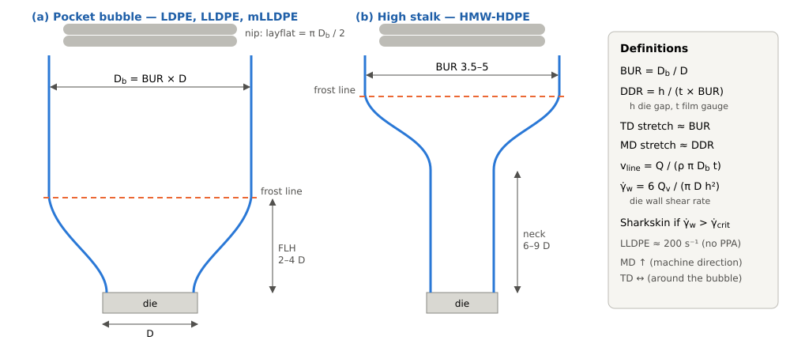
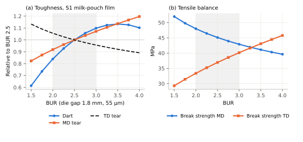
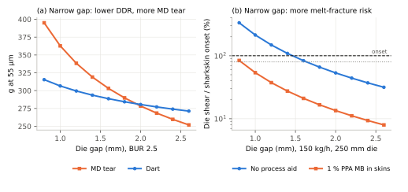
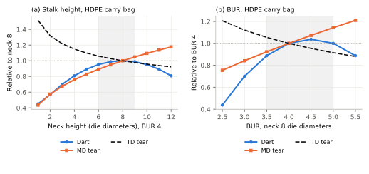
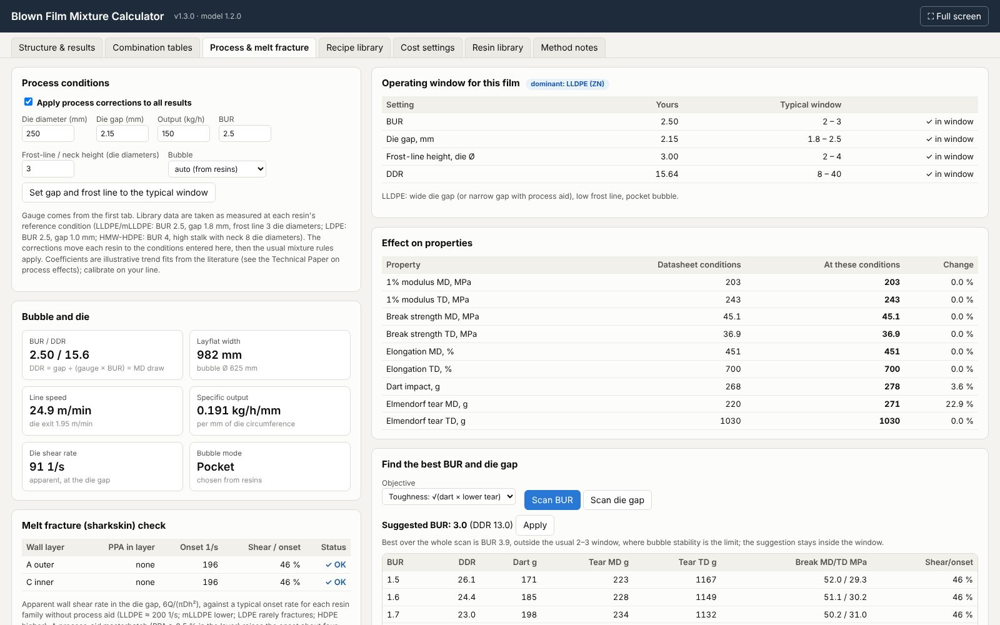

Abstract
Technical Paper No. 02 [1] predicted the properties of blended and coextruded blown polyethylene (PE) films from datasheet values, all of which were measured on small lines at a blow-up ratio (BUR) of about 2.5 (BUR 4 with a high stalk for HDPE). Real films are made at other BURs, draw-down ratios (DDR), die gaps, frost-line heights and outputs, and these process conditions decide the orientation frozen into the film, and with it tear, dart and tensile balance. This paper reviews what the literature shows for each variable, turns the reported trends into family-specific correction laws for LLDPE, mLLDPE, LDPE and HMW-HDPE, and applies them to each resin before the mixture rules of Paper 02. It adds a melt-fracture (sharkskin) check based on the die wall shear rate, typical operating windows, and an optimiser that suggests the BUR and die gap for a recipe. For a 55 µm milk-pouch film the corrections show that the same recipe can give a dart of 175 g at BUR 1.5 and about 320 g at BUR 3.5, and that narrowing the die gap from 1.8 to 1.0 mm raises MD tear by about 25 % but crosses the sharkskin onset unless a process aid is used. For an HDPE-rich carry bag, dart falls by more than half when the stalk is too short. The coefficients are illustrative trend fits, not measurements on one line; they show direction and rough size and must be calibrated before use. The companion calculator now includes these process corrections.
Keywords: blown film; blow-up ratio; draw-down ratio; frost-line height; high stalk; die gap; melt fracture; sharkskin; polymer processing aid; orientation; dart impact; Elmendorf tear
1. Introduction
In Paper 02 [1] the mechanical properties of a film were built from the properties of its resins, using mixture rules inside each layer and across the layers of a coextrusion. Every end-member value came from a datasheet, and every datasheet describes one film made on one line under one set of conditions. That is a hidden assumption: the model predicts the film as if it were blown under the datasheet conditions.
Converters do not run at datasheet conditions. A milk-pouch line may run at a BUR of 2, a lamination line at 2.5 with a wide die gap, a shrink line at 3 or more, and an HDPE carry-bag line at 4 with a stalk of several die diameters. The resin is the same; the film is not. Orientation set in the bubble is the main reason: it decides how lamellae and amorphous chains line up in the machine direction (MD) and transverse direction (TD), and tear, dart and tensile balance follow from it [3, 5, 6].
This paper therefore: (1) defines the process variables and how they relate; (2) collects what the literature shows for each of them; (3) builds correction laws that move each end member from its datasheet condition to the actual condition, after which the mixture rules of Paper 02 apply unchanged; (4) adds a melt-fracture check and operating windows; and (5) shows worked results for common recipes and the best BUR and die gap for each.
2. Process variables

The melt leaves an annular die of diameter D through a gap h, is stretched upward by the nip rolls and outward by the air inside the bubble, and freezes at the frost line (Figure 1). Four ratios describe the deformation:
- Blow-up ratio, BUR = Db/D, the TD stretch. The layflat width is πDb/2.
- Draw-down ratio, DDR = h/(t × BUR), where t is the film gauge. It is the MD stretch: the melt thins by h/t in total, of which BUR is taken up around the bubble and DDR along it [3].
- Frost-line height (FLH), given here in die diameters. For HDPE the corresponding quantity is the neck (stalk) height, the length over which the tube stays at about die diameter before it expands.
- Die wall shear rate, γw = 6Qv/(πDh²), the apparent shear rate in the die gap for volumetric melt output Qv (slit approximation). It decides melt fracture.
At a fixed gauge and die gap, raising BUR lowers DDR, so the two cannot be changed independently except by changing the die gap. The line speed follows from mass balance, v = Q/(ρπDbt), and the specific output Q/(πD), in kg/h per mm of die circumference, compares lines of different size; patents on LLDPE films cite outputs of 8–12 lb/h per inch of die circumference, about 0.14–0.21 kg/h per mm [14].
LDPE and LLDPE are blown in a pocket bubble that expands just above the die and freezes 2–4 die diameters up. HMW-HDPE is blown with a high stalk: the tube rises at die diameter for six to nine die diameters, so the chains relax before the bubble expands to a BUR of 3.5–5 [8].
3. What the literature shows
3.1 Blow-up ratio
Raising BUR moves strength from MD to TD. In three-layer LLDPE films, increasing BUR from 1.7 to 2.8 raised TD tensile strength by 27 % and lowered MD tensile strength by 14 % [2]. Higher BUR also makes the film more isotropic and more stretchable [18]. Dart impact rises with BUR, but the gain shrinks as the molecular-weight distribution (MWD) broadens [3]. In a regression over 98 runs of a C8 LLDPE on three lines, Butler found a positive BUR term and a negative BUR² term for dart, which, from the published coefficients, places the optimum near BUR 3.3 within the studied 2.0–3.8 [4]. For HMW-HDPE, a larger BUR raises MD tear and a lower BUR raises TD tear [8]; in an HDPE/LLDPE bag film the highest dart came at BUR about 4.4–4.5 [9].
3.2 Draw-down ratio and die gap
MD Elmendorf tear is inversely related to DDR and to MD shrinkage: it depends mainly on how far the amorphous chains are drawn out in MD [5]. A wide die gap gives a thick extrudate that must be drawn down more, raising MD orientation and lowering tear [12]; narrow gaps improve MD tear, gauge control, bubble stability and optics [11]. Dart was related to MD shrinkage and to surface roughness caused by the die gap [5]. Converters nevertheless prefer wide gaps for output: commercial lines use 0.76–3 mm (30–120 mil), most of them 1.1 mm or more [13]. LDPE cannot be drawn down as far as mLLDPE, and some shrink films need gaps of about 0.76 mm (30 mil) for the best shrink [13]. Adding LDPE to LLDPE itself locks in more MD orientation, because the slowly relaxing LDPE carries the much larger MD draw [17].
3.3 Frost-line and neck height
For LLDPE, faster cooling between the die and the frost line improved both dart and MD tear in Butler's data [4]. For HMW-HDPE the opposite lever matters: MD tear rises and TD tear falls as the frost line (and stalk) rises, because the lamellae have time to relax before TD expansion [7]. A neck of six to nine die diameters is recommended [8], and the best dart in an HDPE/LLDPE bag film came at about 8–11 die diameters [9]. Run in a pocket, HDPE gives very poor MD tear and dart.
3.4 Melt fracture
Sharkskin melt fracture is a fine, regular surface roughness that appears when the wall shear stress at the die exit exceeds a critical value. Linear, narrow-MWD LLDPE is the classic case, which is why it is the main market for polymer processing aids (PPA) [15]. In a 1.0 mm die gap, an LLDPE showed melt fracture once the shear rate exceeded about 200 s⁻¹; the effect shows most clearly as a loss of dart impact [10]. The critical stress is not universal: it depends on MWD, and a narrow-MWD hexene LLDPE needed more than twice as much PPA as a broader one to clear sharkskin [10]. Fluoropolymer PPAs coat the die and let the melt slip at the wall, and PFAS-free alternatives are now appearing [15].
4. Correction model
4.1 Approach
Each end member in the library is taken as valid at a reference condition (Table 1). For a film made at another condition, each resin's properties are multiplied by correction factors for its family, and the mixture rules of Paper 02 are then applied unchanged. Correcting before mixing keeps the method consistent: a blend of LLDPE and LDPE responds to BUR partly like LLDPE and partly like LDPE.
Table 1. Reference conditions assumed for the Paper 02 end-member data.
| Family | Reference BUR | Reference die gap (mm) | Reference frost-line / neck (die Ø) | Bubble | Basis |
|---|---|---|---|---|---|
| LLDPE (ZN, C4/C6/C8) | 2.5 | 1.8 | 3 | datasheet BUR; gap and frost line assumed typical [4] | |
| mLLDPE | 2.5 | 1.8 | 3 | as LLDPE | |
| LDPE | 2.5 | 1.0 | 3 | narrow-gap practice for LDPE [12] | |
| HMW-HDPE | 4.0 | 1.2 | 8 (neck) | high stalk | datasheet BUR 4; neck 6–9 die Ø [8] |
4.2 Correction laws
With rB = BUR/BUR0 and rD = DDR/DDR0, where DDR0 is computed from the datasheet gauge and the reference gap and BUR, the corrections are:
Stiffness, strength, elongation (MD or TD): P/P0 = rBn (1)
Dart: D/D0 = [1 + β(B − B0)(2Bopt − B0 − B)/(2Bopt − 2B0)] · rDnD · (1 + cFΔFLH) (2)
MD tear: TMD/TMD,0 = rDm · (1 + cTΔFLH); TD tear: TTD/TTD,0 = rBq (3)
Equation (2) is the shape of Butler's dart model [4]: a quadratic in BUR with an optimum, a negative DDR term and a penalty for slow cooling. The BUR term is held constant outside the studied range (1.5–4.0 for a pocket bubble). For HMW-HDPE in a high stalk, dart follows a neck-height law with an optimum at 8 die diameters, D/D0 = 1 − 0.012(N − 8)², and MD and TD tear follow power laws in BUR and neck height. Table 2 lists the defaults. The tensile exponents were fitted to the BUR data in [2]; the others were chosen to reproduce the direction and rough size of the reported trends, and are illustrative.
Table 2. Process-correction laws and default coefficients (illustrative trend fits).
| Property | LLDPE (ZN) | mLLDPE | LDPE | HMW-HDPE (stalk) | Basis |
|---|---|---|---|---|---|
| E, σy MD / TD: (BUR/BUR0)n | −0.10 / +0.15 | −0.10 / +0.15 | −0.05 / +0.08 | −0.10 / +0.15 | TD stiffening with BUR [2, 3]; assumed size |
| σb MD / TD: (BUR/BUR0)n | −0.30 / +0.49 | −0.30 / +0.49 | −0.15 / +0.25 | −0.30 / +0.49 | fitted to MD −14 %, TD +27 % for BUR 1.7→2.8 [2] |
| εb MD / TD: (BUR/BUR0)n | +0.20 / −0.15 | +0.20 / −0.15 | +0.10 / −0.08 | +0.20 / −0.15 | higher BUR, more isotropic and stretchable [18] |
| Dart vs BUR: slope β per unit BUR, optimum | 0.25, 3.3 | 0.30, 3.3 | 0.15, 3.5 | 0.15, 4.5 | quadratic in BUR with optimum ≈ 3.3 [4]; larger for narrow MWD [3]; HDPE [9] |
| Dart vs DDR: (DDR/DDR0)n | −0.15 | −0.15 | −0.10 | — | negative DDR term [4, 5] |
| Dart vs frost line, per die Ø above reference | −3 % | −3 % | 0 | neck law, optimum 8 die Ø | faster cooling improves dart [4]; HDPE neck [8, 9] |
| MD tear vs DDR: (DDR/DDR0)n | −0.40 | −0.30 | −0.30 | (BUR/4)+0.60 · (neck/8)+0.40 | MD tear inversely related to DDR [5, 16]; HDPE [7, 8] |
| MD tear vs frost line, per die Ø | −2 % | −2 % | 0 | in neck law | faster cooling improves MD tear [4] |
| TD tear: (BUR/BUR0)n | −0.25 | −0.25 | −0.15 | −0.40 · (neck/8)−0.20 | lower BUR, higher TD tear [8]; HDPE [7] |
4.3 Bubble mode and HDPE
The bubble mode is chosen from the dominant resin family by mass, or set by the user. In stalk mode the HDPE laws are applied to every resin in the film, taking each resin's library data as valid at the stalk reference. In pocket mode HDPE keeps its BUR tear laws, but its dart is not penalised again: Paper 02 already added a negative excess term for HDPE in LLDPE to represent exactly this processing mismatch, and correcting it twice would double count.
4.4 Melt-fracture check
The apparent wall shear rate γw = 6Qv/(πDh²) is compared with a typical onset rate for each wall layer, the outer and inner skins (or the single layer of a monolayer film). Default onset rates without PPA are 200 s⁻¹ for ZN-LLDPE [10], 120 s⁻¹ for narrow-MWD mLLDPE, 2000 s⁻¹ for LDPE (which rarely sharkskins) and 400 s⁻¹ for HMW-HDPE, combined in a blend by an inverse (harmonic) rule so that the most prone resin dominates; the last three values are assumptions. A PPA masterbatch at 0.5 % or more in the layer multiplies the onset by four, consistent with trials where PPA cleared sharkskin at about 600 s⁻¹ [10]. The result is reported as a ratio: below 70 % OK, 70–100 % caution, above 100 % sharkskin likely. Properties are not adjusted automatically; the check is a warning. Table 3 lists the usual remedies and their side effects.
Table 3. Melt-fracture remedies and their side effects.
| Remedy | Effect on sharkskin | Side effects on film |
|---|---|---|
| Fluoropolymer or PFAS-free process aid (PPA) masterbatch | Coats the die, lets the melt slip; raises onset several-fold [10, 15] | Needs conditioning time; narrow-MWD resins need more [10] |
| Wider die gap | Lowers wall shear rate (∝ 1/h²) | Higher DDR: more MD orientation, lower MD tear [5, 12] |
| Higher melt temperature | Lowers viscosity and wall stress | Less bubble stability; slower cooling lowers dart [4] |
| Lower output | Lowers shear rate in proportion | Lower productivity |
| More LDPE in the skins | Broad-MWD, branched melt is less prone | Lower dart and MD tear (Paper 02) |
4.5 Operating windows and optimiser
Table 4 gives the typical windows used to flag settings. The optimiser scans BUR at a fixed die gap and gauge, within 1.5–4.0 for a pocket bubble and 2.5–5.5 for a stalk, and picks the BUR that maximises a chosen objective; the default is toughness, √(dart × lower of MD and TD tear). If the best value lies outside the window, the best value inside the window is suggested, because bubble stability, not film property, is then the limit. A die-gap scan at fixed BUR suggests the narrowest gap that keeps the wall shear rate below 80 % of onset, since a narrower gap lowers DDR and raises MD tear.
Table 4. Typical operating windows used for flags and for the optimiser.
| Film type | BUR | Die gap (mm) | Frost-line / neck (die Ø) | DDR | Notes and sources |
|---|---|---|---|---|---|
| LLDPE-rich (ZN) | 2.0–3.0 | 1.8–2.5 | 2–4 | 8–40 | wide gap or narrow gap with process aid; dart optimum near BUR 3.3 [4] |
| mLLDPE-rich | 2.0–3.0 | 1.8–2.5 | 2–4 | 8–40 | most prone to sharkskin; plan process aid [10, 15] |
| LDPE-rich | 2.0–3.5 | 0.8–1.2 | 2–5 | 5–20 | narrow gap; about 0.76 mm gaps for shrink film [13] |
| HMW-HDPE-rich | 3.5–5.0 | 1.0–1.5 | 6–9 (neck) | 8–25 | high stalk, neck 6–9 die Ø; larger BUR raises MD tear [8] |
5. Results
5.1 Datasheet conditions are not line conditions
Structure S1 of Paper 02, a 55 µm milk-pouch-type film, was set on a typical three-layer line (Table 5). At the same BUR of 2.5 and a 1.8 mm gap, its DDR is 13.1, against 28.8 for a 25 µm datasheet film. The thicker film is drawn down less in MD, so the corrected MD tear rises from 220 g to 290 g (+32 %) and dart from 268 g to 284 g. Paper 02 noted that per-µm tear does not scale with gauge; the DDR explains much of why.
Table 5. Structure S1 (55 µm) on a standard three-layer line.
| Quantity | Value | Quantity | Value |
|---|---|---|---|
| Die diameter / die gap | 250 mm / 1.8 mm | BUR / DDR | 2.5 / 13.1 |
| Output | 150 kg/h | Layflat width | 982 mm |
| Specific output | 0.191 kg/h per mm of die circumference | Line speed | 24.9 m/min |
| Die exit velocity | 2.33 m/min | Die wall shear rate | 129 s⁻¹ (66 % of sharkskin onset) |
5.2 Blow-up ratio
Figure 2 and Table 6 change BUR from 1.5 to 4.0 at a fixed gap. Dart rises from 175 g to about 322 g at BUR 3.5 and then levels off; MD tear rises steadily as DDR falls; TD tear falls slowly. Break strength crosses over: MD falls from 52.0 to 39.6 MPa and TD rises from 29.3 to 45.8 MPa, balancing near BUR 3.2. Within the usual LLDPE window of 2–3, moving from 2.0 to 3.0 raises dart by about 31 % and MD tear by 17 % at no material cost.

Table 6. Structure S1 (55 µm): effect of BUR at a fixed 1.8 mm die gap.
| BUR | DDR | Dart (g) | MD tear (g) | TD tear (g) | σb MD / TD (MPa) | E1% MD / TD (MPa) |
|---|---|---|---|---|---|---|
| 1.5 | 21.8 | 175 | 239 | 1167 | 52.0 / 29.3 | 212 / 227 |
| 2.0 | 16.4 | 239 | 266 | 1088 | 48.0 / 33.4 | 207 / 236 |
| 2.5 | 13.1 | 284 | 290 | 1030 | 45.1 / 36.9 | 203 / 243 |
| 3.0 | 10.9 | 312 | 311 | 985 | 42.9 / 40.1 | 200 / 249 |
| 3.5 | 9.4 | 322 | 330 | 948 | 41.1 / 43.1 | 197 / 254 |
| 4.0 | 8.2 | 313 | 347 | 918 | 39.6 / 45.8 | 195 / 259 |
5.3 Die gap and melt fracture
Figure 3 and Table 7 hold BUR at 2.5 and change the die gap. Narrowing the gap from 1.8 to 1.0 mm lowers DDR from 13.1 to 7.3 and raises MD tear from 290 g to 363 g. But the wall shear rate rises with 1/h², from 129 to 419 s⁻¹, and the skins cross the sharkskin onset below about 1.45 mm. With 1 % PPA masterbatch in the skins the whole range down to 0.8 mm stays below onset. This is the main trade-off on an LLDPE line: a narrow gap gives a tougher film only if melt fracture is controlled.

Table 7. Structure S1 (55 µm, BUR 2.5, 150 kg/h, 250 mm die): die gap, MD tear and sharkskin risk.
| Die gap (mm) | DDR | MD tear (g) | Dart (g) | Shear rate (s⁻¹) | Shear / onset, no PPA | Shear / onset, 1 % PPA MB |
|---|---|---|---|---|---|---|
| 0.8 | 5.8 | 395 | 315 | 654 | 334 % | 84 % |
| 1.0 | 7.3 | 363 | 307 | 419 | 214 % | 54 % |
| 1.2 | 8.7 | 338 | 299 | 291 | 148 % | 37 % |
| 1.4 | 10.2 | 319 | 294 | 214 | 109 % | 27 % |
| 1.6 | 11.6 | 303 | 289 | 164 | 83 % | 21 % |
| 1.8 | 13.1 | 290 | 284 | 129 | 66 % | 17 % |
| 2.2 | 16.0 | 268 | 277 | 87 | 44 % | 11 % |
| 2.6 | 18.9 | 252 | 271 | 62 | 32 % | 8 % |
5.4 HDPE stalk height and BUR
Figure 4 applies the stalk laws to the 120 µm three-layer carry bag of the calculator library (HDPE-rich, high stalk). Shortening the neck from 8 to 2 die diameters lowers dart and MD tear to under 60 % of their values, while TD tear rises; a neck above about 10 die diameters starts to lose dart again. At a neck of 8, raising BUR from 2.5 to 4.5 more than doubles dart and raises MD tear by about 40 %. These are the reasons HMW-HDPE is run with a high stalk at BUR 4–5 [8, 9].

5.5 Best BUR and die gap for common recipes
Table 8 runs the optimiser for seven recipes from the calculator library, each on a typical line. Starting points use the recipe's BUR and the middle of the window for gap and frost line. For the LLDPE- and mLLDPE-rich films the in-window optimum is the top of the window (BUR 3.0); the full scan prefers 3.8–3.9, which is beyond what most LLDPE bubbles hold stably. The suggested gaps are 1.7–2.4 mm, set by melt fracture. The predicted gains are largest where the recipe was set at a low BUR (stretch film, FFS sack, stand-up pouch), and for the HDPE carry bag set at BUR 3, where moving to BUR 4.9 recovers the dart that a too-low BUR had lost. The collation shrink film is LDPE-dominated and less sensitive; its suggested BUR of 3.3 is in the higher range used to develop TD shrink.
Table 8. Suggested BUR (toughness objective, inside the window) and die gap (narrowest with shear below 80 % of onset) for common recipes.
| Recipe (from the calculator library) | Bubble | Die mm / kg/h | BUR / gap as set | DDR | Dart / MD tear (g) | Shear/ onset | Suggested BUR / gap | DDR | Dart / MD tear (g) | Shear/ onset | Change dart / MD tear |
|---|---|---|---|---|---|---|---|---|---|---|---|
| Milk pouch film, 3-layer white, 50 µm | 250 / 150 | 2.5 / 2.15 | 17.2 | 219 / 189 | 46 % | 3 / 1.7 | 11.3 | 249 / 221 | 74 % | +13 % / +17 % | |
| Snack / spice pouch sealant, 3-layer, 60 µm | 250 / 150 | 2.5 / 2.15 | 14.3 | 249 / 212 | 59 % | 3 / 1.9 | 10.6 | 283 / 238 | 76 % | +14 % / +12 % | |
| Stand-up pouch sealant, stiff core, 100 µm | 300 / 200 | 2.2 / 2.15 | 9.8 | 339 / 604 | 69 % | 3 / 2.0 | 6.7 | 452 / 696 | 79 % | +34 % / +15 % | |
| FFS heavy-duty sack, 25 kg, 150 µm | 400 / 400 | 2 / 2.15 | 7.2 | 790 / 1338 | 93 % | 3 / 2.4 | 5.3 | 1051 / 1480 | 75 % | +33 % / +11 % | |
| Collation shrink film, mono, 50 µm | 300 / 200 | 3 / 1.00 | 6.7 | 177 / 269 | 86 % | 3.3 / 1.1 | 6.7 | 179 / 269 | 71 % | +1 % / -0 % | |
| Blown stretch (pallet) film, 3-layer, 23 µm | 250 / 150 | 2 / 2.15 | 46.7 | 149 / 242 | 60 % | 3 / 1.9 | 27.5 | 209 / 295 | 77 % | +41 % / +22 % | |
| Carry bag, 3-layer, 120 µm | stalk | 150 / 100 | 3 / 1.25 | 3.5 | 45 / 111 | 98 % | 4.9 / 1.4 | 2.4 | 65 / 149 | 78 % | +45 % / +34 % |
6. Why these corrections are limited
- Orientation is not a function of BUR and DDR alone. Cooling rate, melt temperature, output and stress history matter; Butler found cooling and stress terms as important as the ratios [4].
- Resin dependence. The response to BUR and DDR depends on MWD, comonomer and long-chain branching; super-hexene and metallocene grades respond differently from ZN grades [3, 16]. One coefficient set per family is a simplification.
- Reference conditions are partly assumed. Datasheets give BUR and gauge but rarely the die gap or frost line, so DDR0 and FLH0 are typical values.
- Coextruded layers are drawn together but do not respond equally; the model applies the same condition to every layer.
- Melt fracture onset is a screening value. It depends on MWD, temperature, die material and PPA conditioning time [10, 11].
- Coefficients are illustrative. Only the tensile exponents were fitted to a quantitative data set [2]; the rest reproduce reported directions and rough sizes. Calibrate on your own line by running two or three BURs and die gaps.
7. Calculator
The Blown Film Mixture Calculator (v1.3.0) has a new Process & melt fracture tab (Figure 5). It takes die diameter, die gap, output, BUR, frost-line or neck height and bubble mode; shows BUR, DDR, layflat, line speed, specific output and die shear rate; checks melt fracture for each skin; compares the settings with the operating window; lists the change in every property from datasheet to line conditions; and scans BUR and die gap to suggest the best settings. A switch applies the corrections to all results, and BUR, die gap, frost line and output can be varied in the combination tables.

8. Guidelines
- Quote film properties with their process conditions. A dart or tear value without BUR, gauge and die gap is half a specification.
- LLDPE and mLLDPE: run BUR toward the top of the stable range (about 3) and the frost line low; expect dart and MD tear to improve and MD strength to fall.
- Use the narrowest die gap that stays clear of sharkskin. A process aid widens the choice; without it, keep the die shear rate well below about 200 s⁻¹ for LLDPE skins.
- HMW-HDPE needs its stalk. Keep the neck at 6–9 die diameters and BUR at 4–5; a pocket HDPE film loses most of its dart and MD tear.
- LDPE-rich films are less sensitive to BUR for toughness, but BUR 3–4 and a narrow gap set the TD shrink of collation films.
- Calibrate. Two or three settings of BUR and gap on your own line, entered against the model, turn these trend laws into usable predictions.
9. Conclusions
- The method of mixtures of Paper 02 predicts films at datasheet conditions; moving each resin to the actual BUR, DDR and frost-line or neck height before mixing extends it to real lines.
- BUR moves strength from MD to TD and raises dart toward an optimum near BUR 3.3 for LLDPE; DDR controls MD tear; a low frost line helps LLDPE, and a high stalk is essential for HMW-HDPE.
- Melt fracture sets the lower limit of the die gap. A narrow gap improves MD tear only if sharkskin is controlled, usually with a process aid.
- For common recipes, settings inside the usual windows can change dart and MD tear by 10–40 % at no material cost, which is often more than a change of resin grade.
- The coefficients are illustrative and must be calibrated; the calculator makes the method usable for screening process settings together with formulation.
Data basis
Resin data and mixture rules are those of Paper 02 [1]. Process trends are from the published sources cited; only the tensile BUR exponents are fitted to quantitative data [2], and the other coefficients, the reference die gaps and frost lines, the operating windows, and the melt-fracture onset rates for mLLDPE, LDPE and HDPE are assumptions chosen to follow reported trends and common practice. All tables and figures were computed with the same engine as the calculator. The downloadable PDF is laid out in IEEE two-column conference format.
Acknowledgement
The author acknowledges the assistance of Claude, a large language model by Anthropic, in literature search, coding of the calculation engine and calculator, preparation of figures and drafting of the text. All content was reviewed by the author, who is responsible for it.
References
- K Vijay Anand, “Predicting the mechanical properties and cost of blown polyethylene films by the method of mixtures,” Technical Paper No. 02, 2026. https://haivijayanand.github.io/papers/blown-film-mechanical-properties-method-of-mixtures.html
- “Effect of the blow-up ratio on morphology and engineering properties of three-layered linear low-density polyethylene blown films” (academia.edu). https://www.academia.edu/49152026/
- “Rheological studies of molecular effect and processing conditions on blown film property of polyethylenes,” Polymer, 2022. https://www.sciencedirect.com/science/article/abs/pii/S0032386122011569
- T. I. Butler, “Predicting blown film residual stress levels influence on properties,” TAPPI PLACE Conf., 2006. https://www.tappi.org/content/enewsletters/eplace/2006/06PLA71.pdf
- R. M. Patel, T. I. Butler, K. L. Walton, G. W. Knight, “Investigation of processing–structure–properties relationships in polyethylene blown films,” Polym. Eng. Sci., vol. 34, pp. 1506–1514, 1994.
- R. K. Krishnaswamy, A. M. Sukhadia, “Orientation characteristics of LLDPE blown films and their implications on Elmendorf tear performance,” Polymer, vol. 41, pp. 9205–9217, 2000.
- D. Godshall, R. K. Krishnaswamy, A. M. Sukhadia, G. L. Wilkes, “Processing–structure–property investigation of blown HDPE films containing both machine and transverse direction oriented lamellar stacks,” Polymer, vol. 44, pp. 5397–5406, 2003.
- LyondellBasell, “Fundamentals and troubleshooting for HMW-HDPE blown film extrusion,” technical tip. https://lyondellbasell.com/globalassets/documents/polymers-technical-literature/fundamentals_and_troubleshooting_for_hmw-hdpe_blown_film_extrusion.pdf
- F. Cuesta, A. M. Camacho, E. M. Rubio, “Influence of the main blown film extrusion process parameters on the mechanical properties of a HDPE hexene copolymer and LLDPE butene copolymer blend used for plastic bags,” Appl. Sci., vol. 13, 12164, 2023. https://www.mdpi.com/2076-3417/13/22/12164
- H. Mavridis, K. Fronek, “Effect of MWD on the amount of polymer process aid required to suppress sharkskin melt fracture in LLDPE,” J. Plast. Film Sheeting, vol. 18, pp. 45–57, 2002; Dyneon technical note. https://multimedia.3m.com/mws/media/991388O/mwd-amount-ppa-required-suppress-sharkskin-melt-fracture-lldpe.pdf
- 3M Dyneon, “Die geometry and polymer processing additives (PPAs) efficiency,” technical paper. https://multimedia.3m.com/mws/media/991383O/die-geometry-and-ppas-efficiency.pdf
- US Patent 4,554,120, “Process for eliminating surface melt fracture during extrusion of thermoplastic polymers.”
- US Patent 9,068,033, “Branched polyethylene with improved processing and high tear films made therefrom.”
- US Patents 6,956,088 and 8,399,581 (blown film output per inch of die circumference and die gaps of 30–120 mil).
- Safic-Alcan, “Processing aids for polyolefins: melt fracture and the transition away from fluoropolymer PPAs.” https://www.safic-alcan.com/en-es/industry-articles/processing-aids-polyolefins/
- “Single-site LLDPE blown films at higher draw-down ratio” (ResearchGate). https://www.researchgate.net/publication/288786180_Single-site_LLDPE_blown_films_at_higher_draw-down_ratio
- N. Savargaonkar et al., “Formulating LLDPE/LDPE blends for abuse-resistant blown film,” Plastics Technology, 2014. https://ptonline.com/articles/formulating-lldpeldpe-blends-for-abuseresistant-blown-film
- US Patent 7,314,662, “Elastomeric film with anti-skid additive” (effect of BUR on film isotropy and stretchability).